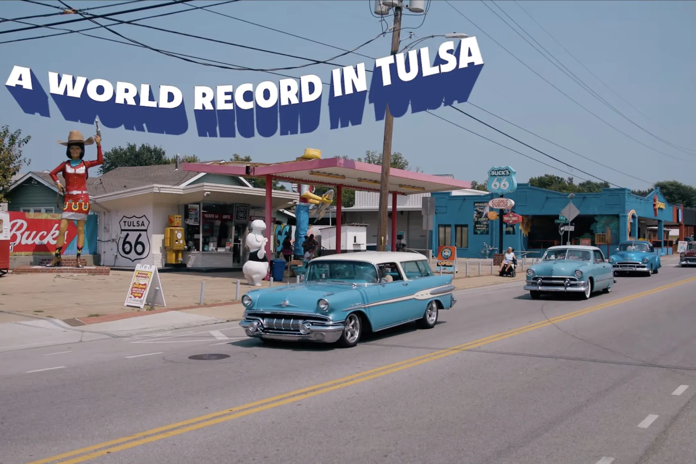
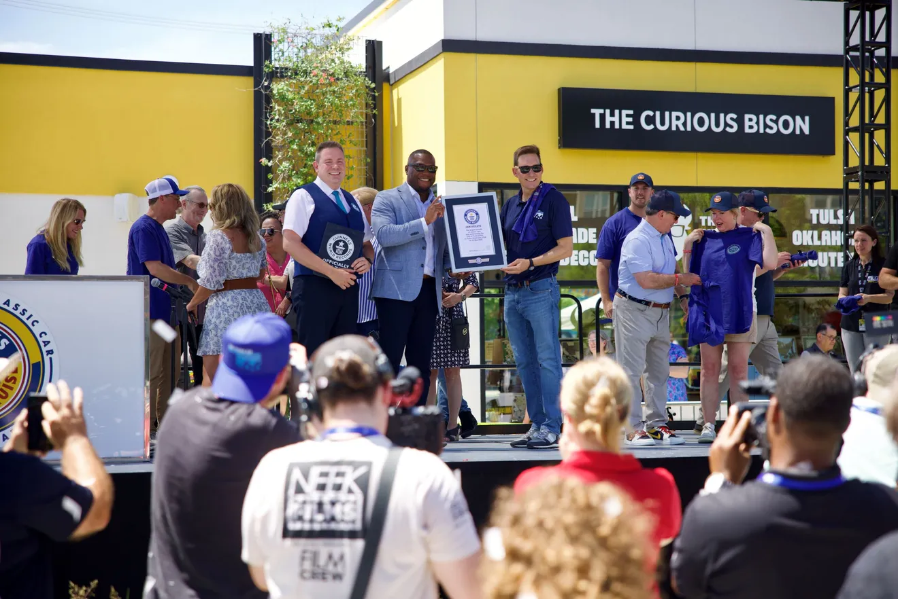
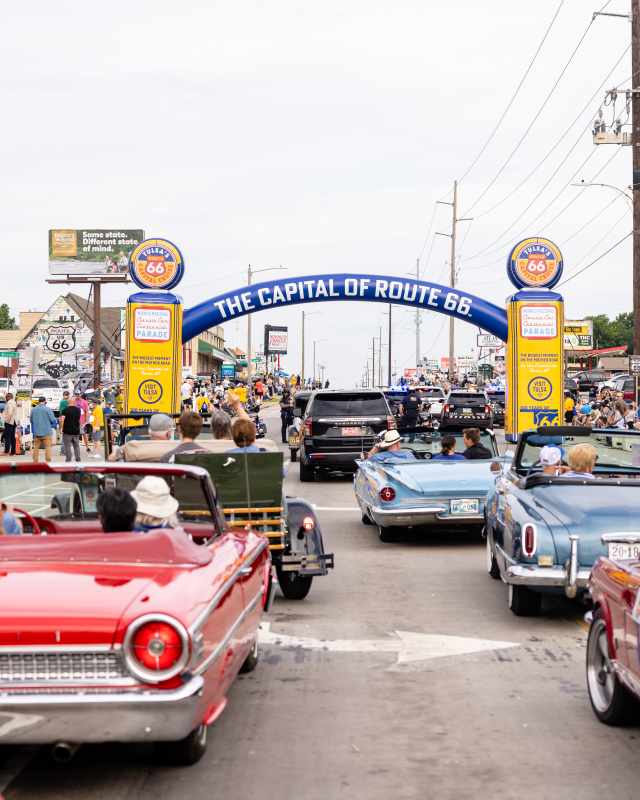

Capital Cruise
Helped organize and run Capital Cruise entirely in-house — an event that broke the world record for the largest classic car parade ever, with nearly 3,600 cars on the route. I was solely responsible for the starting line and ran three "party zones" spanning three linear miles of the parade.